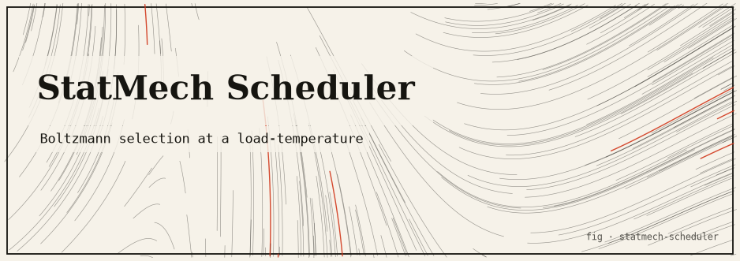

statmech-scheduler
A simulation-only CPU scheduler where tasks are particles with energy, the system has a temperature, and scheduling decisions are drawn from Boltzmann weights.

The idea
Statistical mechanics describes how particles in a heat bath distribute over energy levels according to the Boltzmann distribution: low-energy states are exponentially more likely at low temperature; at high temperature all states become roughly equally likely (maximum disorder). This package asks: what if a CPU scheduler used that distribution to pick the next task?
At low system temperature the scheduler becomes nearly deterministic, always picking the lowest-energy (highest-priority) task. At high temperature it randomises, giving each task a chance proportional to its Boltzmann weight. Cooling over time mimics simulated annealing.
The mathematics
Task i has energy E_i (lower = higher priority) Boltzmann weight: w_i = exp(-E_i / T) Selection probability: P_i = w_i / Σ_j w_j System temperature T: Low T → near-deterministic, picks lowest energy task High T → uniform random selection T → 0 → pure priority scheduling
Run it
git clone https://github.com/caelum0x/awesome-mad-projects.git cd statmech-scheduler go test ./... go run . # Sample output at T=1.0: # Task A (E=1.0): selected 61% # Task B (E=2.0): selected 22% # Task C (E=3.5): selected 17%